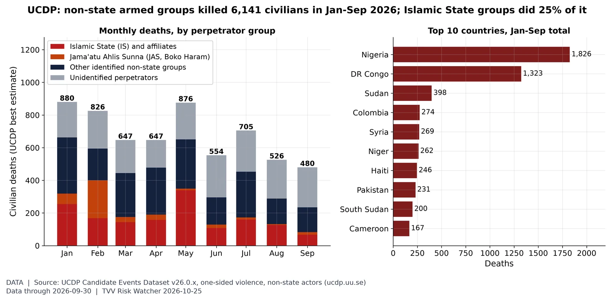
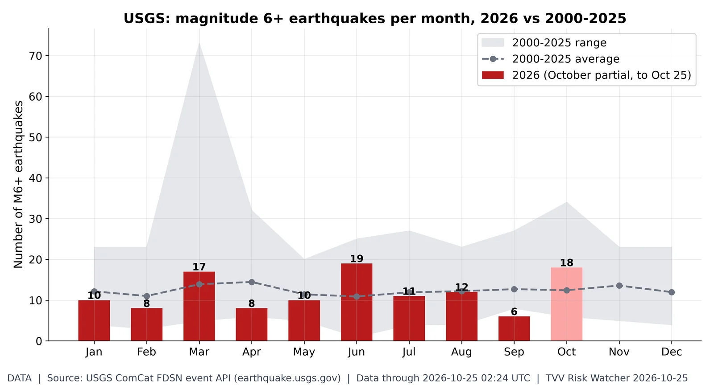
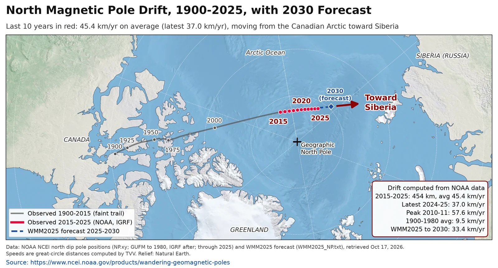
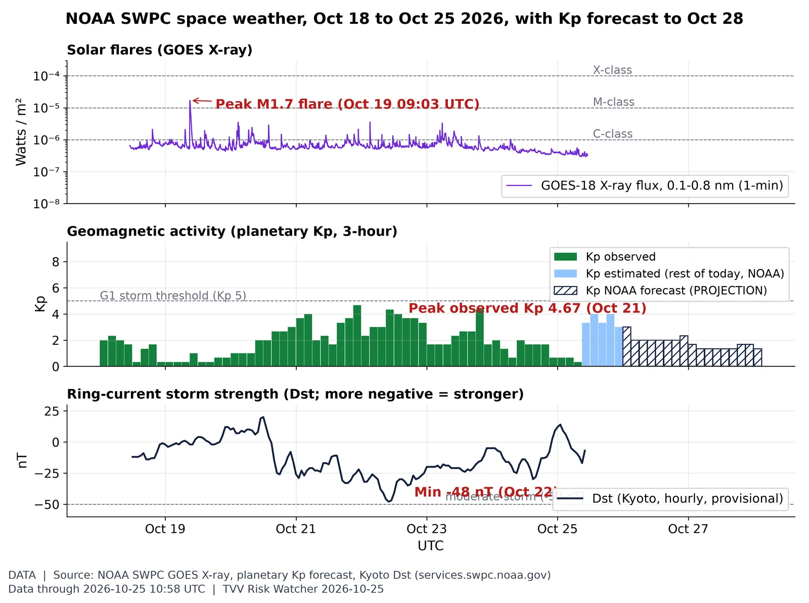
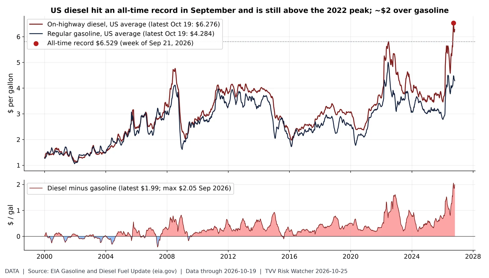
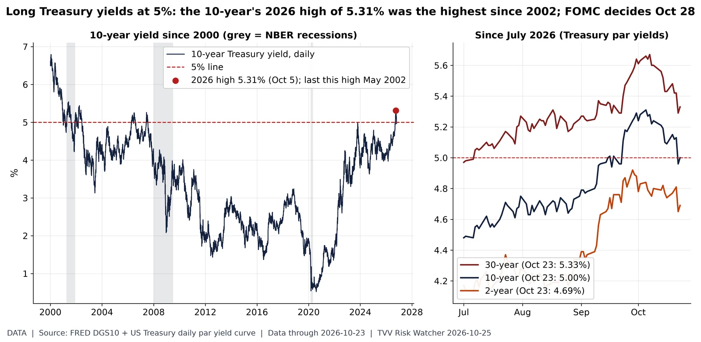
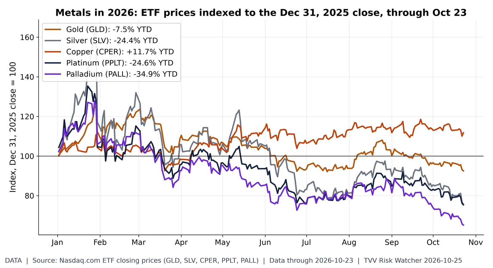
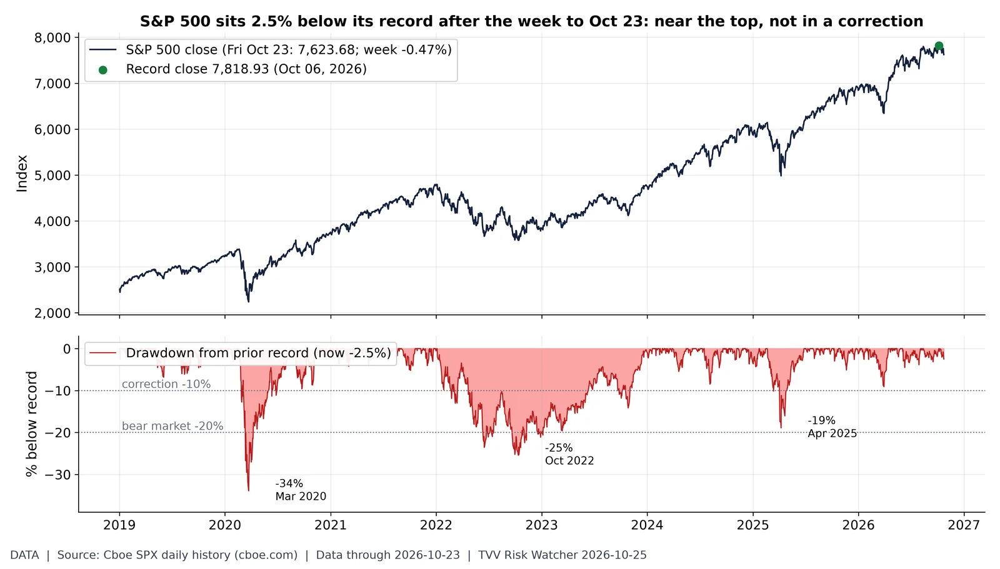
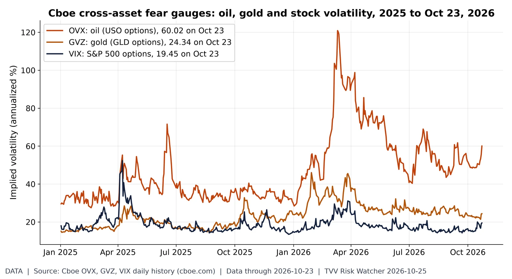

Israel votes Oct 27 at war-level risk. Israel's country GPR read 1.61% of articles in September 2026, 6.0x its Jan 2015-Sep 2023 average (0.27%); before Oct 7, 2023 the peak was 0.97% (May 2018). None of the five 2019-2022 elections came close to today's risk level. Held at Sep 2026 (monthly; next update early Nov). Source: https://www.matteoiacoviello.com/gpr.htm

Who is killing civilians. UCDP's preliminary data record 6,141 civilians killed by non-state armed groups in Jan-Sep 2026 (480 in September); Islamic State groups account for 1,525, and Nigeria (1,826) and DR Congo (1,323) lead by country. Source: https://ucdp.uu.se/downloads/

M6+ quakes by month. October 2026 has 18 M6+ quakes through Oct 25 vs a 2000-25 full-October average of 12.4; the busiest 2026 month was Jun (19). Source: https://earthquake.usgs.gov/fdsnws/event/1/

North magnetic pole drift (measured). The north magnetic pole moved 454 km in 2015-2025 (45.4 km/yr average; 37.0 km/yr in 2024-25, down from a 57.6 km/yr peak in 2010-11) as it heads from the Canadian Arctic toward Siberia; NOAA's WMM2025 forecasts about 33 km/yr to 2030. Weekly standard chart; data held at 2025 (annual NOAA series). Source: https://www.ncei.noaa.gov/products/wandering-geomagnetic-poles

Space weather this week: flares, Kp, Dst. Peak observed Kp this week was 4.67 (Oct 21); Dst minimum -48 nT (Oct 22), latest -7 nT. The week's biggest flare was M1.7 (Oct 19). NOAA forecasts a peak Kp 4.00 for Oct 25 (issued 2026 Oct 25 0030 UTC). Source: https://www.swpc.noaa.gov/products/goes-x-ray-flux

Diesel record: the freight-cost shock. US on-highway diesel hit an all-time record $6.529/gal in the week of Sep 21 and was $6.276 on Oct 19, still above the 2022 peak ($5.810); the premium over regular gasoline ($4.284) is $1.99 vs a record $2.05 (Sep 2026). Held at Oct 19 (next EIA retail survey Mon Oct 26). Source: https://www.eia.gov/petroleum/gasdiesel/

10Y at 5%: 2026 high is the highest since 2002. The 10-year Treasury closed the week at 5.00% on Fri Oct 23 (30-year 5.33%, 2-year 4.69%); its 2026 high of 5.31% on Oct 5 was the highest since May 2002. FOMC decides Oct 28. Source: https://fred.stlouisfed.org/series/DGS10
Gold's worst week. GLD fell -4.0% in the week to Fri Oct 23 (close $366.61), its worst week since Jun 05, 2026; GLD is -26.1% below its Jan 29 closing high but -7.5% for 2026. Source: https://www.nasdaq.com/market-activity/etf/gld/historical

Metals scoreboard 2026. Through the Oct 23 close, Copper (CPER) leads 2026 at +11.7% and Palladium (PALL) trails at -34.9%; gold (GLD) is -7.5% and silver (SLV) -24.4%. ETF price changes, not spot. Source: https://www.nasdaq.com/market-activity/etf/gld/historical

How far from the top. The S&P 500 closed Fri Oct 23 at 7,623.68, -0.47% on the week and 2.5% below its Oct 06 record close of 7,818.93; for scale, the 2020, 2022 and 2025 drawdowns reached -34%, -25% and -19%. Source: https://www.cboe.com/us/indices/dashboard/spx/

Oil volatility vs stock volatility. On Oct 23, oil implied volatility (OVX) closed at 60.02, 3.1x the VIX (19.45); gold's GVZ was 24.34. OVX's 2026 closing high is 120.91 (Mar 11). Source: https://www.cboe.com/us/indices/dashboard/ovx/
AI power concentration. Epoch AI tracks 95 frontier AI data centers at 14.2 GW of current power; Google (22%), Meta (16%) and Amazon (13%) hold 51%. Site timelines sum to 17.7 GW by now and 49.9 GW planned by Jan 2030, 3.5x the confirmed operating total (plans are projections). Source: https://epoch.ai/data/data-centers